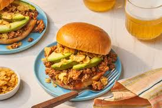

Home
Chorizo Sloppy Joe Recipe

Delicious chorizo sloppy joe that will have you craving for more.
Ingredients
- 1 1/4 pounds bulk fresh Mexican chorizo
- 1 (8-ounce) package red chile enchilada sauce
- 1/2 cup water
- 4 sesame seed hamburger buns, split and toasted
- 1 large avocado, thinly sliced
- 3/4 cup corn chips, roughly crushed
Steps
- Cook the chorizo:
Starting in a cold nonstick skillet, cook the chorizo over medium heat, stirring often with a wooden spoon to break the meat into smaller pieces, until cooked through, 6 to 7 minutes.
Transfer the chorizo to a medium bowl using a slotted spoon. Remove the drippings from the skillet; discard or reserve for another use. Add the enchilada sauce and water; bring to a boil over medium-high.
Continue to cook over medium-high, stirring often, until the sauce is just slightly thickened, about 2 minutes. Stir in the reserved browned chorizo; cook, stirring frequently, until heated through, about 30 seconds to 1 minute. Remove from heat.
- Assemble the sloppy Joes:
Divide the chorizo mixture evenly among 4 bottom buns. Top evenly with corn chips, sliced avocado, and the remaining bun tops. Serve immediately.